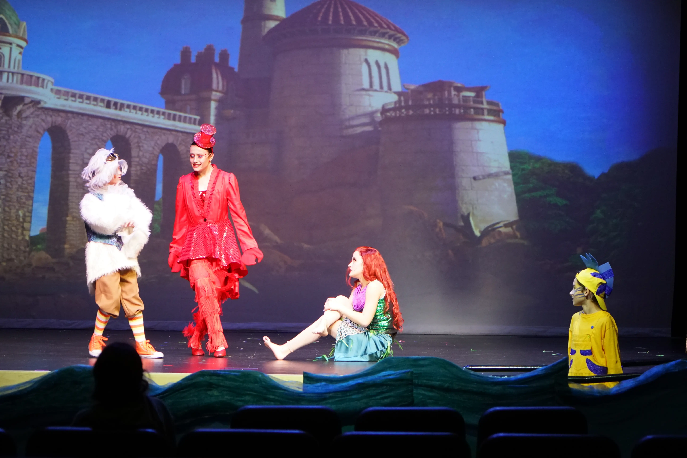
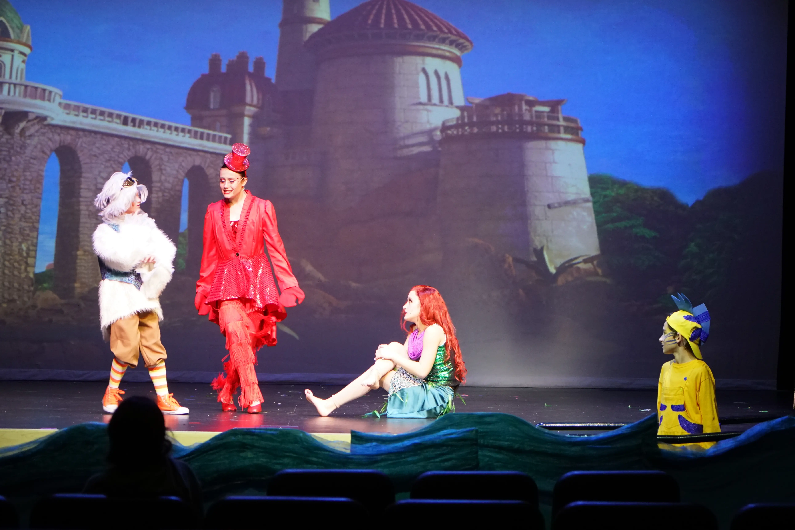
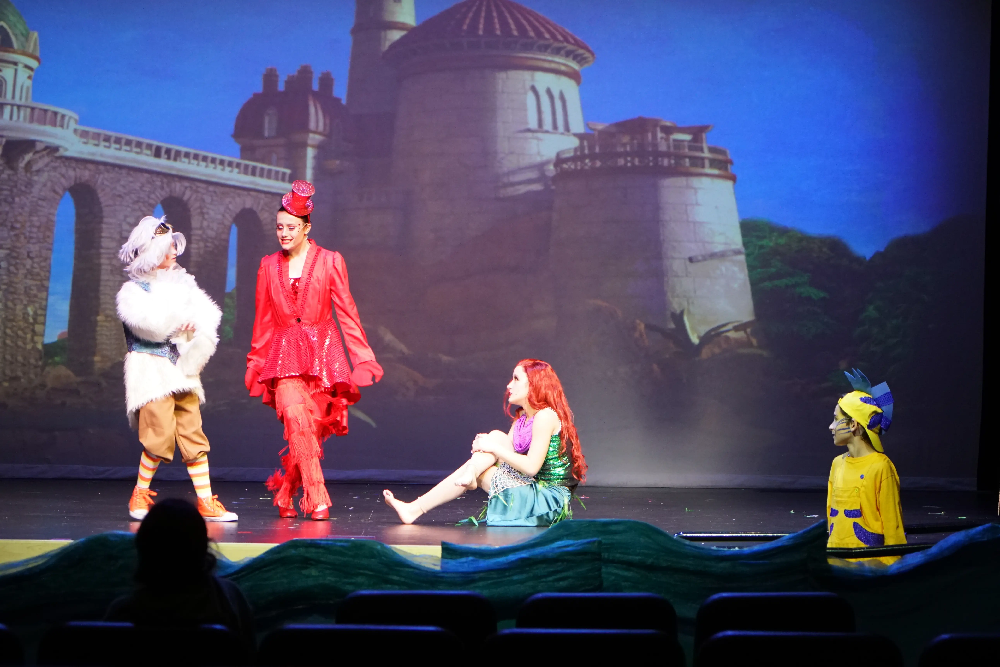
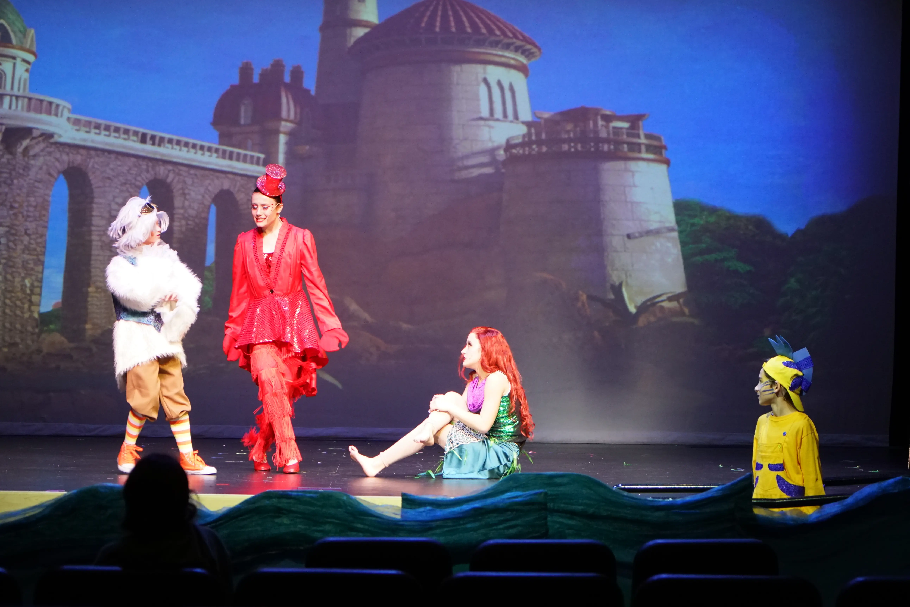

❮
❯


 

 

My favorite show to design for, so far! Learning from the previous year, I tackled new challenges including ETC's Augmented 3d, instructing and directing students on the production crew, as well as projections with Qlab 5. The most challenging part of this production was trying to color match RGB fixtures with CMY fixtures.
In the previous year I had experimented with atmospheric lighting design: stars among the audience, color-changing walls. However this year, it was an integral part of my design; using the entire house to tell the story and envelop the audience in the plot.
Also learning from my previous year at the Ritz, I requested a more powerful follow-spot to better illuminate the actors.
I am most proud of my "time zero" cues that I used for lightning storms and music buttons; adding the flourish and show-stopping pizzazz worthy of a Disney Musical!
Location: The Ritz Theatre, Escondido
Number of cues: 204
Follow Spot Model: Lycian Super Arc 400 HTI
Lighting Fixtures:
ProStage 348 (x 12)
Mega Lite Nova-Lite Q200 (x 15)
Mega Lite Drama Profile Q2 (x 32)
VariLite SL LED Spot 300 (x 6)
Email: Churbon@cox.net
Phone: (760) 207-2267